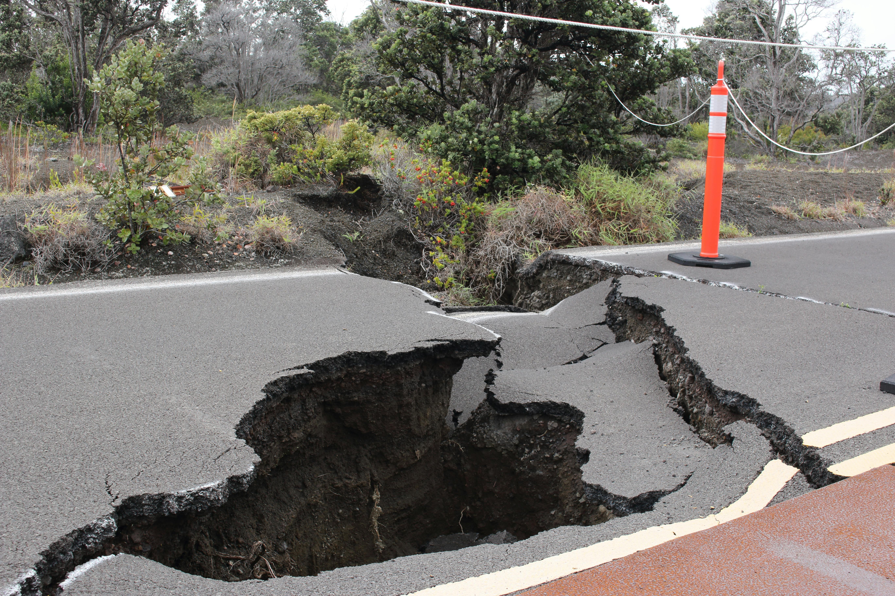
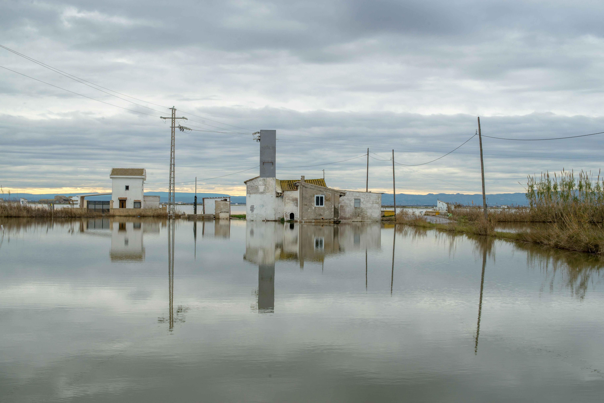

Terremotos
Movimientos sísmicos que pueden causar daños devastadores.

Huracanes
Tormentas tropicales con vientos extremadamente fuertes.

Tsunamis
Olas gigantes provocadas por terremotos submarinos o erupciones volcánicas.

Incendios Forestales
Fuegos descontrolados que afectan áreas naturales.

Inundaciones
Acumulación excesiva de agua en áreas habitadas.